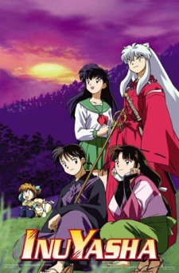
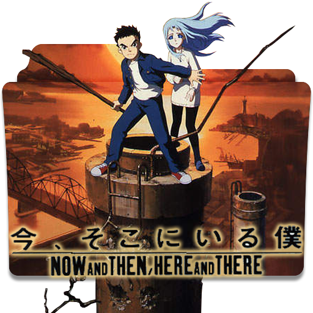

<!DOCTYPE html></DOCTYPE>
<html></html>
<head>

<!--This is my internal CSS-->
<style>

p 
{
    font-size: 2rem;
    }

h2 
{
    font-size: 3rem;
}

h1
{
    font-size: 3.5rem;
    text-align: center;
}

ul
{
    font-size: 2rem;
}

</style>

<title>Mock Webpage</title>
</head>

<body background="images/Background.jpg">
<h1>My Favorite Anime Titles</h1>


<article><b><h2><center><font color="purple">Code Geass</b></h2></center>
    <center></center>
<p>Code Geass is an anime created by Sunrise Studio back in 2006.  It has two seasons of 25 episodes each
     and follows the adventures of an anti-hero by the name of Lelouch Lamperouge, who attends class during
      the day and mascarades as the Black Knights liberation group leader Zero.  He posseses a 
      super power called geass that gives him absolute control over anyone he uses it on, but it has a few limitations.  
      This anime is not for the faint of heart as it deals with death, murder, mind control, and a lot of morally gray 
      characters.  It will make you question whether the ends justify the means and at what point 
      do you say that's going too far.
</p></font>
<p>The genres for this anime are:
<ul>
    <li>Mecha</li>
    <li>Action</li>
    <li>Military</li>
    <li>Sci-Fi</li>
    <li>Super Power</li>
</ul>
</p></article>

<article><b><h2><font color="Navy Blue"><center>Fruits Basket</b></center></h2>
    <center></center>
<p>Fruits Basket is an anime created by Studio Deen Studio back in 2001.  It is composed of 26 episodes in total and 
    follows the life of Tohru Honda, a high school girl who recently lost her mother due to a car accident.  Through a 
    mishap she ends up as a live in maid for Kyo Souma, Yuki Souma, and Shigure Souma.  Sigure Souma is a novelist and 
    older cousin of both Yuki and Kyo, who are classmates of Tohru's at her high school. Everything runs smoothly until 
    Tohru accidently discovers the Souma family curse.  When thirteen specific members of the family are hugged by the 
    opposite sex, they transform into one of the zodiac animals plus the cat.  It is a sweet little anime that tackles 
    the ups and downs of love, friendship, and heartbreak. 
</p></font>
<p>The genres for this anime are:
        <ul>
                <li>Slice of Life</li>
                <li>Fantasy</li>
                <li>Drama</li>
                <li>Comedy</li>
                <li>Romance</li>
                <li>Shoujo</li>
            </ul>
</p></article>

<article><b><h2><center><font color="blue">Ghost in the Shell</b></center></h2>
    <center></center>
<p>Ghost in the Shell is an anime created by Production I.G. Studio back in 2002.  There are two seasons with 26 
    episodes each and follows the life of Major Motoko Kusanagi, the leader of a special police force called 
    section 9.  The entire anime takes places in the future where technological advancements have progressed to the 
    point that people can upload themselves into fully prosthetic bodies.  Major Kusanagi is one such individual, who 
    lost her real body in an accident and must live on in a cybernetic body.  Season one has the team primarily tracking down 
    an infamous hacker called "The Laughing Man" and season 2 focuses on a terrorist group called "The Invidivual Eleven."  
    If you like gritty detective shows with a bit of a twist to them, then this is the anime for you.</p></font>

    <p>The genres for this anime are:
            <ul>
                    <li>Action</li>
                    <li>Military</li>
                    <li>Seinen</li>
                    <li>Police</li>
                    <li>Mystery</li>
                    <li>Sci-Fi</li>
                </ul>
    </p></article>

<article><b><h2><center><font color="bc3d21">Inuyasha</b></center></h2>
    <center></center>
<p>Inuyasha is an anime created by Sunrise Studio back in 2000.  There are 167 episodes in the first season and 26 
    episodes in the second season.  The anime follows Kagome, a typical high school girl who gets pulled through a well 
    by a demon and ends up 500 years in the past.  There she meets a half dog demon called Inuyasha and together they 
    are tasked with protecting the shikon jewel from those who would use it's powers for nefarious reasons.  Soon however, 
    an accident shatters the jewel and the two must travel across Japan looking for each and every piece.  Along the way 
    they meet Shippo (a fox demon child), Sango (a demon slayer), and Miroku (a monk) who join them in their quest.  The 
    main villain of the story is a demon called Niroku, who used to be a human criminals before he sold his body to demons.  
    This is a typical hero quest with a bit of romance adventure story filled with great battles, laughter, and a few 
    hardships.
</p></font>
<p>The genres for this anime are:
    <ul>
        <li>Action</li>
        <li>Adventure</li>
        <li>Fantasy</li>
        <li>Comedy</li>
        <li>Magic</li>
        <li>Romance</li>
        <li>Shounen</li>
        <li>Historical</li>
        <li>Demons</li>
    </ul>
</p>
</article>

<article><b><h2><center>Ima, Soko ni Iru Boku</center></h2></b>
    <center></center>
<p>Ima Soko ni Iru Boku is an anime created by AIC Studios in 1999.  There are 13 episodes in the entire series and it
     follows the journey of Shu, a typical boy who is sucked into another world while trying to help a girl name Lala-Ru.  
     The world he is sucked into is a hellish world where a dictator named Hamdo is destroying the world with constant warfare.  
     The anime covers themes of kidnapping, rape, genocide, child exploitation, hunger, thirst, and brutal torture.  This anime 
     will have you crying non stop for 6 1/2 hours straight with no reprieve and no happy ending.
</p>
<p>The genres for this anime are: 
    <ul>
        <li>Tragedy</li>
        <li>Drama</li>
        <li>Adventure</li>
        <li>Military</li>
        <li>Fantasy</li>
    </ul>
</p>
</article>

<br>
<br>
<br>
<br>
<address>
<footer>
    <p >Webpage Created By:  Michelle Williams &copy;</p>
    <p align="right">Contact Information <a href="mailto:mcwilli94@gmail.com"> mcwilli94@gmail.com </a></p></font>
</footer>
</address>
</body>

</html>